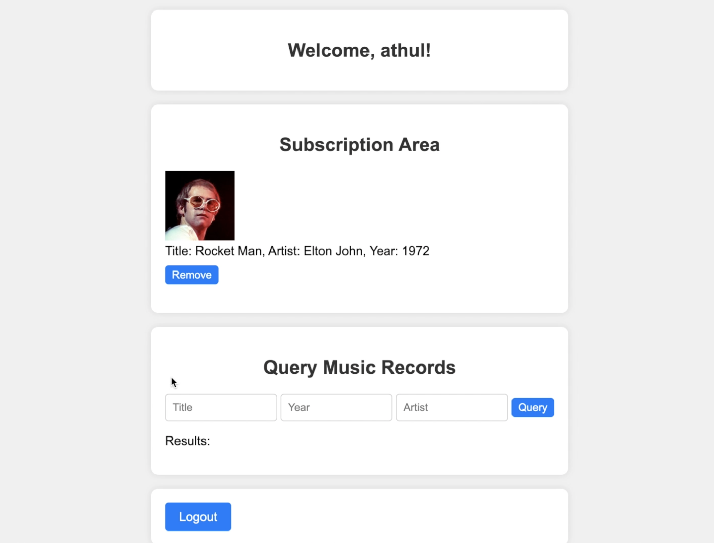
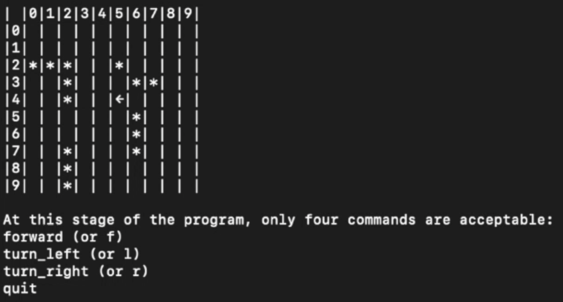

Projects
The code repository for my portfolio website can be accessed by clicking the button below.
GitHub RepoThe following are the projects that I've been involved in over the years:
Music Subscription App | HTML, CSS, Javascript, PHP, AWS (S3, DynamoDB, EC2)

Video Demo
A dynamic web application was created, employing HTML, CSS, JavaScript, and PHP on AWS EC2 to efficiently manage and showcase music subscription services. This included implementing user authentication and registration processes through a DynamoDB-backed login system.
Additionally, a robust AWS infrastructure was engineered, incorporating S3 for scalable image storage and DynamoDB for real-time data handling, thereby significantly enhancing the app's performance and scalability. A user-friendly interface was designed and seamlessly integrated, enabling subscribers to access and interact with a diverse library of artist images and music information stored in AWS S3 and DynamoDB.
Furthermore, efforts were made to optimise web application responsiveness and ensure cross-browser compatibility to deliver a smooth user experience.
Video Demo
Vacuum Cleaner Game | C++

Video Demo
The vacuum cleaner game developed in C++ utilised OOP principles, featuring multiple classes responsible for various functions and facilitating navigation across a 10x10 board. This design allowed for a structured approach to managing game mechanics and interactions.
A command-line interface was implemented to enhance game interaction, prioritising straightforward command inputs for seamless operation and navigation. This interface provided players with intuitive controls, ensuring an accessible and user-friendly experience.
To further enhance gameplay, an easy-to-use control system was built, enabling players to initiate the game, select their vacuum's starting position, and dictate its direction through simple text-based commands. Rigorous testing and refinement were conducted to guarantee smooth operation and a bug-free experience, ensuring an enjoyable gameplay experience for users interacting with the command line interface.
Video Demo
Minecraft Village Generator | Python

Leveraging the MCPI library, a procedural Minecraft village generation system was developed in Python, showcasing adept programming skills. Recursion techniques were employed to dynamically split rooms within village houses, ensuring each possessed unique dimensions, significantly enhancing the variety and realism of the generated village.
Through the integration of pathways connecting houses and the generation of trees, creativity and problem-solving were demonstrated, adding to the natural and cohesive appearance of the village.
Collaboration played a pivotal role in the project's success, as close coordination with team members facilitated effective task management, idea sharing, and resolution of challenges. Through collaborative efforts, project objectives were met efficiently, resulting in a cohesive and well-executed final product.
GitHub Repo Video Demo
Closing The Gap | Java, HTML, CSS, SQL

Developed "Closing the Gap," a web application aimed at illuminating and educating on socio-economic disparities between Indigenous and non-Indigenous populations in Australia. The backend was engineered using Java and the Javalin framework, employing JDBC and SQLite for efficient data handling and querying of large datasets. This backend architecture ensured robust server-side logic and effective management of diverse socio-economic data.
For the frontend, a user-friendly interface was crafted using HTML and CSS, prioritising responsive design and intuitive navigation. Dynamic data visualisations were integrated to enable users to filter and compare socio-economic factors across categories such as health and education, enhancing user engagement and understanding.
Collaborative efforts were key to project success, as close coordination with a project partner involved using version control software like Git and GitHub. This facilitated shared responsibilities for design decisions, code implementation, and debugging, ensuring a cohesive and polished final product.
Video Demo
Rock Paper Scissors | Javascript, HTML, CSS

A rock-paper-scissors game was developed using JavaScript, HTML, and CSS exclusively, showcasing a blend of frontend technologies to create an interactive gaming experience. In the HTML structure, elements were strategically laid out to facilitate user interaction, including buttons for selecting rock, paper, or scissors, as well as areas for displaying game outcomes and scores.
JavaScript served as the backbone of the game, handling the logic behind player selections, computer-generated choices, and determining the winner for each round. Event listeners were employed to detect user clicks on the choice buttons, triggering the corresponding actions within the game's logic. Conditional statements were utilised to compare player and computer choices, with the outcomes dynamically updated in the HTML elements to reflect the results of each round. This implementation resulted in a seamless and engaging rock-paper-scissors game experience, demonstrating the power and versatility of frontend web technologies for developing interactive applications.
Github Repo App
Facebook Metrics Analysis | Python, NumPy, Matplotlib, Pandas, Jupyter Notebook

Analysed a Facebook metrics dataset derived from a publicly accessible source, specifically examining posts from a prominent cosmetics brand's Facebook page in 2014. To ensure the data's quality and appropriateness for analysis, comprehensive data cleaning and preprocessing techniques were applied. This involved addressing missing values and standardising formats to facilitate accurate insights extraction.
Exploratory data analysis techniques were then employed to visually depict trends, patterns, and relationships inherent within the dataset. Utilising tools such as Matplotlib, valuable insights into the performance of posts were gleaned, shedding light on crucial aspects of the brand's Facebook presence.
Collaboration was central to the project's success, with team members utilising Jupyter Notebook as the primary environment for data analysis, code execution, and project documentation. This collaborative approach fostered efficient sharing of findings and methodologies, contributing to a thorough and insightful analysis of the Facebook metrics dataset.
GitHub Repo Report